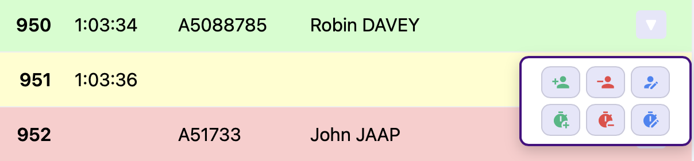
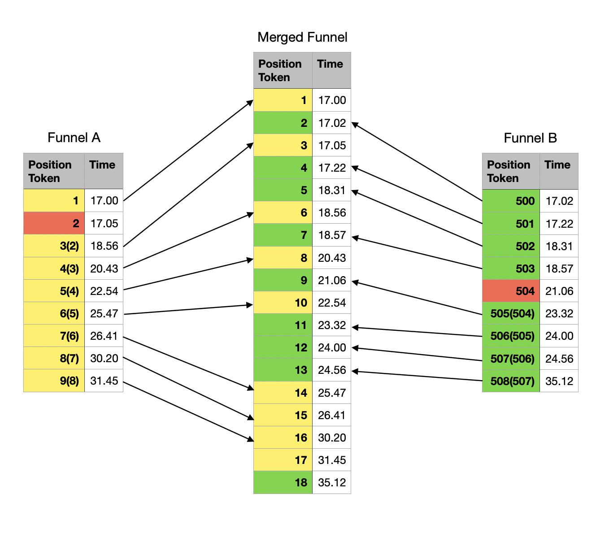
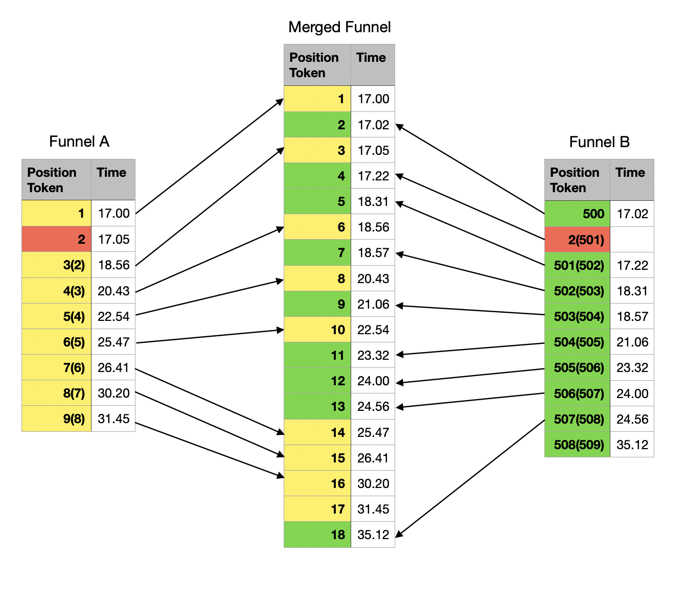
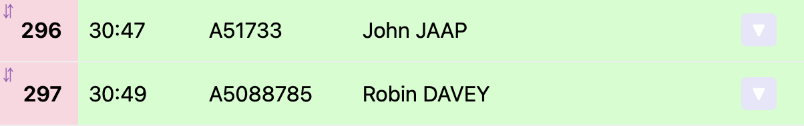
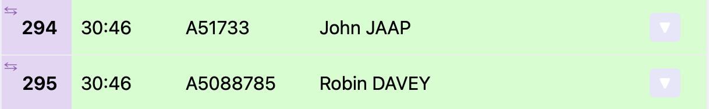
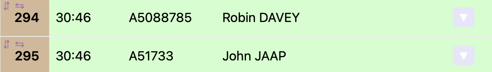

parkrohn User Guide
Guide
Features
Can be used to:
- Process results when a Real Double/Multiple Funnel has been used.
- Fix single or double/multiple funnel results when:
- Block(s) of tokens have been given out in reverse order.
- Block(s) of tokens have been dropped.
- Blocks of tokens swapped (e.g. blocks 200 to 299 and 100 to 199 given in the wrong order).
Process
Download results files (single or double/multiple funnels). In EMS select Results / Create. Left click on each of the Timer ( ) and Scanner ( ) icons at the right hand side in turn then Save and Cancel. This gives a set of data files in your Downloads folder. These are the files you will use for this parkrohn web app. You may want to download all timer files, so you can check which of each of the funnel files is the better to use, in the same way as you might in EMS.
Single Funnel
- Drag and drop one timer file into timer A box.
- Drag and drop all scanner files into scanner box.
- The timer B box must not have files dropped onto it for this feature to work.
- Tap ‘Create Single Funnel’.
- Optionally add details of non scanning athletes.
- Tidy up the funnel prior to uploading back into EMS.
Double or Multiple Funnels
- Drag and drop funnel A timer file into timer A box.
- Drag and drop funnel B timer file into timer B box.
- Continue to drag and drop timer files until all funnels have files
- Drag and drop all scanner files into scanner box.
- Change if necessary Funnel B Start Value (first token number of Funnel B) as this may be different to the default value offered.
- Repeat for all remaining funnels
- Tap ‘Create Funnels’.
- Add details of any non scanning athletes recorded to each funnel, it is important to do this prior to combining the funnels as position numbers will change once combining has taken place.
- Tidy up all funnels prior to combining and uploading back into EMS.
Optionally add names
- Click on the Get Athlete Names button and follow the instructions on screen
Double/Multiple (must do) / Single (can do)
Insert or Remove Unknown Athletes or Times to get the number of times and athletes to match. This is very difficult to fix after merging the funnels and if not done results will be inaccurate if there were funnel duckers or dropped tokens.
Controls to do these actions are a little different to EMS.

Starting from the left:
- Position in Funnel - This is the position in the funnel they passed through, not the athlete's actual position in the run.
- Time
- Athlete number
- Athlete Name (if retrieved)
Buttons (displayed after clicking on discloure arrow)
Top row
- Add Athlete - Causes athletes from this point onwards to shift down into the times below creating a new empty athlete row.
- Delete Athlete - Cause athletes from this point onwards to shift upwards and remove the athlete details of the selected row.
- Amend Athlete - Allows the athlete number to be amended. Note: There is no check available to establish if the new athlete number is a valid athlete (unless they are already in the list of names retrieved).
Bottom Row
- Add Time - Inserts a new time identical to the row selected and all other times are shifted down.
- Delete Time - Removes the time of the row selected and all other times are shifted up.
- Amend Time - Allows the selected time to be amended, this can only be amended to a time less than the row below and greater than the row above.
Colours
A fully populated row will be shown in Green, times without athletes will be in yellow and athletes without times in red as above. In the example above the last athlete in the funnel was scanned but there haven't been enough times recorded. Removing the athlete in row 951 will resolve this issue.
Funnel Duckers (THIS BIT IS IMPORTANT)
*** See the practical impact of funnel duckers in the news above. ***
*** These concerns are much less of an issue than we thought they may have been. ***
Funnel duckers are more of a problem when it comes to a real double/multiple funnel it is unfortunately one of the downsides of this type of funnel. These can only really be resolved within the parkrohn software because once merging of the funnels has occured then it's very difficult to amend the results to correct them.
Examples (assuming Double funnel)
Funnel Ducking in either Funnel
Below shows a situation where a runner ducks out of each funnel. The ducked athletes are shown in red (incorrect positions are in brackets).

Here the solution would be (as with EMS) to insert a blank athlete in parkrohn back into the position that the runner ducked out from, albeit in this case, one from each funnel. This would shift the times down and back to where they should be.Funnel Ducking across Funnels
Below shows a situation where a runner ducks out of one funnel and into the other. The ducked athlete is shown in red (incorrect positions are in brackets).

This will be difficult to resolve unless you saw the offence take place, if so, then make a note of the token number that the offender took (in this case 501), this will help you resolve the funnel they took a token from as you can simply remove that athlete to bring funnel back on track. The problem comes now that you need to establish where they came from. Again if this was witnessed, then you can ascertain which token they should have taken and insert an athlete in that funnel accordingly. If funnel ducking between funnels happens wthout knowing it then it has the capacity to skew the results considerably as it will reduce athletes times in one funnel and increase them in the other. It may be worth having a funnel manager in the middle of the funnels to look specifically for this type of offending. It is worth noting, that most funnel ducking occurs because the individual isn't interested in getting a time at all, so ducking between two funnels is not that likely an occurance especially if both funnels are moving at a similar pace.
Optional actions if required
Tidy Up Reverse Order
- Tap ‘Reverse Tokens’.
- Enter Start and Finish numbers of reversed block.
- Tap ‘Reverse selected tokens’.
- Token block will be flipped and highlighted in pink along with up/down indicators in Position field.

Swapped Blocks
- Tap ‘SwapTokens’.
- Enter Start and End of first block, Start of second block.
- Tap ‘SwapTokens’.
- Selected blocks will be swapped and highlighted in lilac along with left/right indicators in Position field.

Swapped and Reversed Tokens
- If both operations have been performed selected blocks will be highlighted in brown along with left/right and up/down indicators in Position field.

Dropped Tokens
- Tap ‘Remove dropped tokens’.
- Suggested batches of dropped tokens will be shown.
- If you agree with the suggestions, tap ‘Remove’.
- Tokens will be removed and all athletes moved up.
Other Features now available
- All amendments to the funnel data can be undone or redone to make editing easier.
- This will re-populate the page with the state it was at last time you used it. Very handy if later amedments need to be made.
- This can be used to download or load the data along with all Undo/Redo history so these can be shared with others. Useful if you want to send your data off for someone elso to confirm or assist with. Also useful so that a permanent copy can be kept.
- Tabbed view is the only option for multiple funnel, but it can be switched on or off for double funnels where screensize prevents easy editing when side by side.
- Various graphs detailing runner distibution across funnels/time.
- These show information in relation to scanning issues, either athletes who have no pnumber or multiple athletes against a single pnumber.
Undo/Redo
Restore previous session
Import/Export Session
Tabbed View
Statistics
Info Panels
Final Steps
- Tap ‘View merged funnel for download’.
- Scroll through the funnel data to the bottom to see save buttons.
- Tap ‘Download Timer File’ file will be saved as timer.csv
- Tap ‘Download Scan File’ file will be saved as scan.txt
- The files created can now be imported into EMS for processing.
- Note: If you already have files saved you may find that the file names have a number
appended to the file name, eg timer-xx.csv
In EMS Results Page
- Select ‘Direct Upload’ from menu, bottom, centre.
- Select the newly created Scan and Timer files.
- Make sure these 2 files are ticked and all others unticked.
- Continue as normal results processing.
Limitations and known issues with parkrohn
- If amendments need to be made after the results have been produced, it may be required in certain circumstances to restore the parkrohn session, make further amendments and republish a whole set of results rather than do small edits.
- There is no validation on the files dropped onto sections. If you are seeing very strange results, reload the page and ensure the correct files are dropped on the correct areas.
- No validation on athlete numbers, other than the fact it has to be a number. If you enter an unknown athlete number, no checks will be made.
- This has been tested with source files that have been uploaded directly into EMS via the volunteer app and also files that are emailed from the volunteer app (for some reason these files are different from those uploaded directly), however, parkrun may change the format at anytime and this will no doubt break this!
- Times amended or added should be delimited with colons eg MM:SS or H:MM:SS.
- There is currently no way to use parkruns API to get runner names. We've come up with a solution that makes getting names possible, hopefully one day we may be able to offer a better solution...
- When duplicate position numbers are found in the scan files, a warning will be shown, only one of the athletes against that position will be shown in the funnel but all athlete numbers are viewable in the warning given. This situation will require further investigation as it would in EMS although the duplicated position numbers will not end up in the final upload.
- If you are seeing a large number of blank rows in Funnel B make sure the starting token number for funnel B is correct. You can change this value and recreate the funnels without having to reload the page and drag and drop again.
- There is a bug whereby removing a block of dropped tokens at the end of the funnel does not work correctly. This isn't actually a likely scenario, but is mentioned here for transparency.
- No provision has been made for smaller screens other than tabbed funnels, and is not going to be implemented due to the amount of effort required to do so, and the fact that John and Robin prefer a bigger screen!
- This is not endorsed by parkrun and has been written independently of them, it is a project that Robin Davey and John Jaap from Preston Park parkrun have undertaken purely because the functionality is not available as it stands in the official EMS web app and we wanted some way to easily process results using a real double funnel.
- Finally, this is supplied as is and used at your own risk. If you are thinking of trialling a real double funnel, then please send us an email and we will endeavour to help you get prepared.